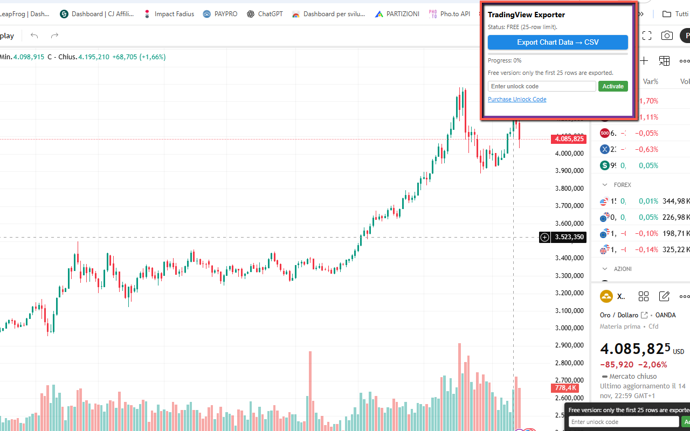
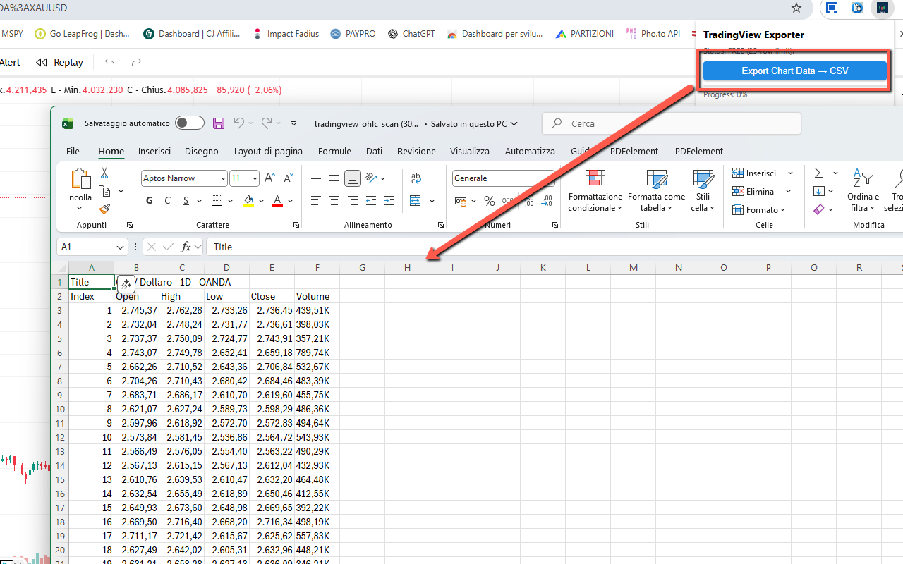

TradChart to CSV Exporter
TradChart to CSV Exporter lets you extract OHLC (Open, High, Low, Close) and Volume data directly from TradingView charts and save everything into a clean CSV file, ready for Excel, Google Sheets or any data-analysis tool.
The extension reads the live values from the TradingView legend while scanning across the chart, so you don’t need any API key or special integration. Just open a chart (e.g. XAUUSD, stocks, crypto, forex, indices), click Export and get a CSV with one row per bar, including OHLC and Volume. The FREE version exports the first 25 rows; the PRO version removes this limit via a simple unlock code.
🚀 Quick Start
- Install from the Chrome Web Store (replace with your Web Store URL)
- Pin the extension icon next to the address bar.
- Open a TradingView chart (any symbol, any timeframe) in your browser.
- Click the extension icon and press Export Chart Data → CSV.
- Wait for the scan to complete (you’ll see a progress bar and percentage), then open the downloaded CSV in Excel or Google Sheets.
📷 Screenshots


✅ Features
- Exports OHLC + Volume directly from TradingView charts.
- Works with all symbols: forex, stocks, indices, crypto, commodities, futures and more.
- Supports any timeframe (from 1m up to 1M), using the live TradingView legend.
- CSV output with header row (Index, Open, High, Low, Close, Volume) ready for Excel / Sheets.
- Automatic detection of symbol / timeframe / exchange and inclusion in the CSV as title.
- Built-in progress bar and percentage while scanning the chart.
- FREE vs PRO: FREE exports the first 25 rows; PRO unlocks unlimited rows.
- Simple PRO unlock: enter the activation code once and the extension stays in PRO mode.
- No TradingView API key required, no account or login integration needed.
🔒 Permissions (and why)
- activeTab — access the current TradingView chart tab when you click Export.
- scripting — inject the lightweight content script that reads OHLC and Volume values from the page.
- storage — remember PRO activation status and basic settings.
- Host permissions (
https://*.tradingview.com/*) — needed to interact with TradingView chart pages only.
❓ FAQ
Does it work on any website?
No, this extension is specifically focused on TradingView charts. It reads the OHLC and Volume values from the TradingView UI and exports them to CSV.
Do I need a TradingView API key?
No API key is required. The extension works by reading the values displayed in the chart legend while scanning across the chart.
Why do I only get 25 rows in the CSV?
In the FREE version, export is limited to the first 25 rows collected during the scan. You can unlock the PRO version with an activation code to remove this limit and export the full dataset.
Is my data tracked or uploaded anywhere?
No. All processing happens locally in your browser. The extension does not send your chart data or CSV files to any external server. Settings (like PRO status) are stored on your device using Chrome storage.